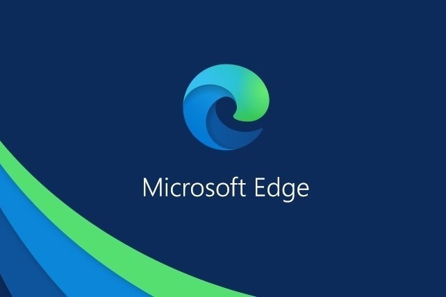

Es un navegador web desarrollado por la compañía norteamericana Microsoft en sustitución de su antiguo navegador Internet Explorer. Microsoft Edge ha sido desarrollado específicamente para el vigente sistema operativo de los ordenadores Windows, Windows 10 y se ha construido en torno a los estándares web. Es un navegador multidispositivo, diseñado tanto para ordenadores como para smartphones, tablets y otros dispositivos móviles.
